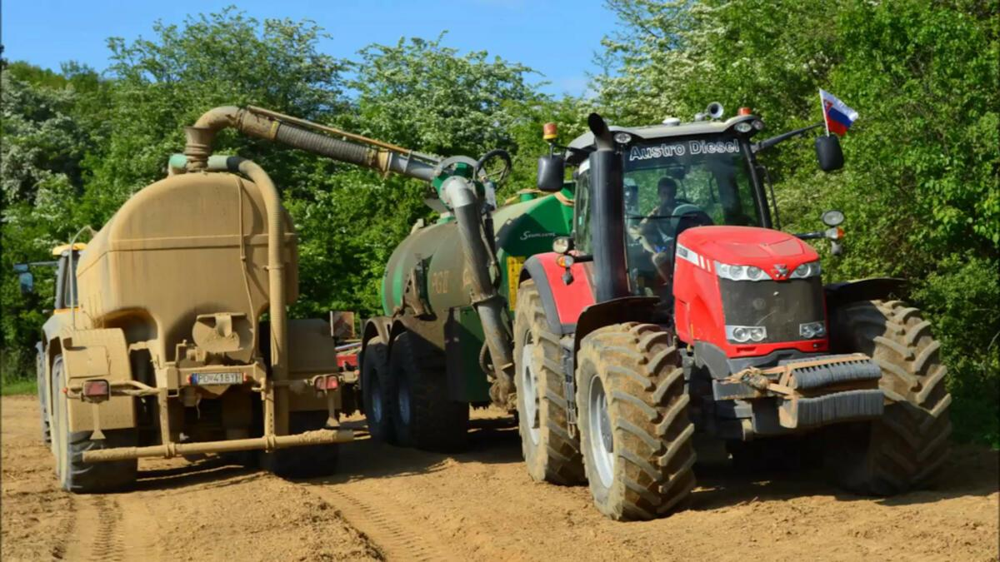
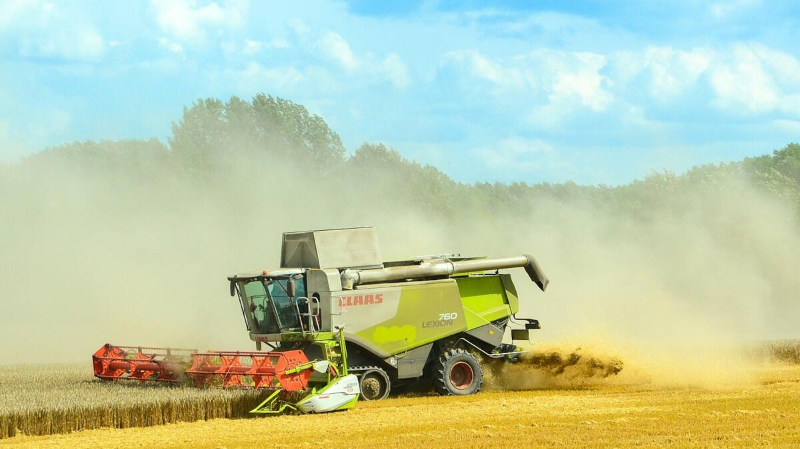
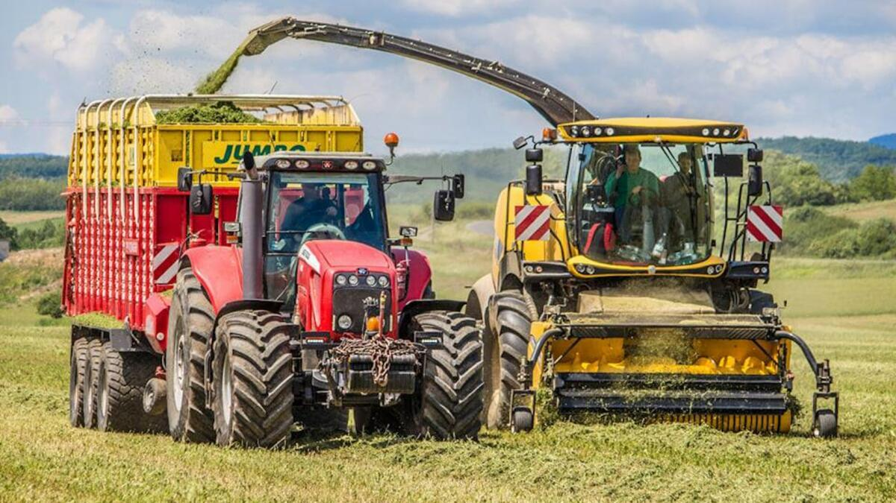
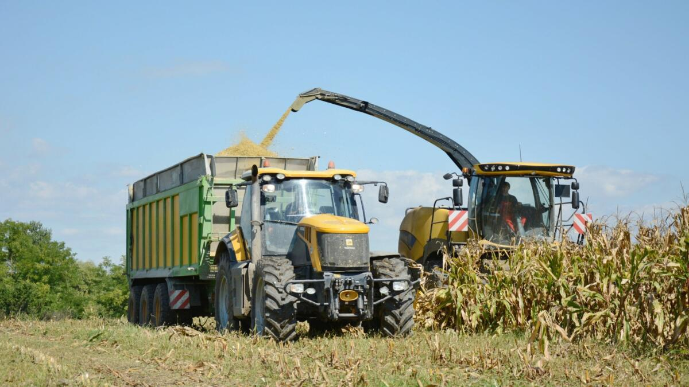
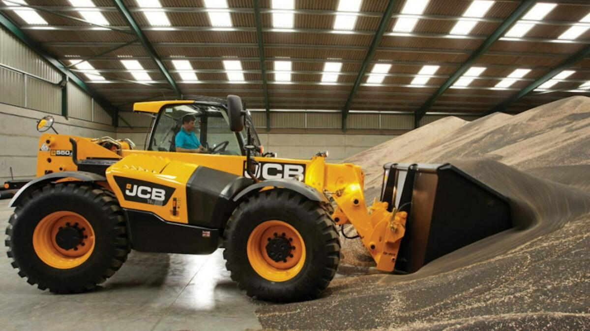
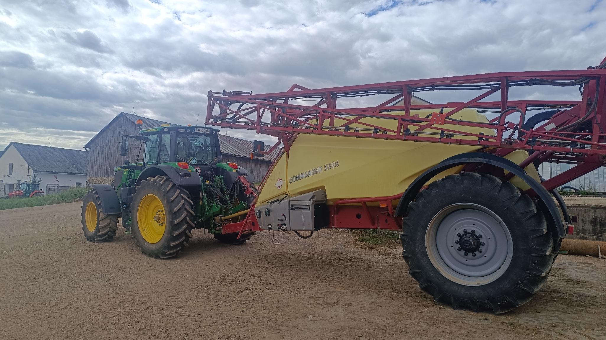

Naše služby
Aplikácia digestátu a hnojovnice

Zabezpečujeme komplexnú službu aplikácie digestátu a hnojovice vrátane dopravy materiálu aj samotnej aplikácie na pole. Naša technológia umožňuje efektívne a presné rozmetanie, pričom denný výkon celej súpravy dosahuje približne 1 000 m³ aplikovanej a zapravenej hmoty.
Žatevné práce

Realizujeme kompletné žatevné práce od zberu obilnín a repky až po kukuricu. Služba zahŕňa kosenie, odvoz a v prípade záujmu aj spracovanie rastlinných zvyškov lisovaním a zber balíkov.
Senážovanie

Poskytujeme profesionálne mechanizačné služby určené na zber, odvoz a uskladnenie senáže. Naša senážna technológia zahŕňa kosenie, riadkovanie, rezanie, odvoz, ako aj práce na senážnej jame alebo konzervovanie do veľkoobjemových vakov.
Silážovanie

Zabezpečujeme zber, odvoz a uloženie siláže s dôrazom na kvalitu a efektivitu. Silážna linka pozostáva z rezania, odvozu a prác na silážnej jame, ktoré realizujeme modernou mechanizáciou.
Práca s manipulátorom

Ponúkame manipulačné služby pomocou manipulátora JCB 550-80, ktorý disponuje nosnosťou 5,5 tony a maximálnym zdvihom 8 metrov. Manipulátor je možné si prenajať aj bez obsluhy.
Postrekovacie práce

Poskytujeme profesionálne služby postrekovania poľnohospodárskych plodín. Naša technika umožňuje presnú a rovnomernú aplikáciu prípravkov, čím zabezpečujeme maximálnu účinnosť ochrany rastlín a optimálne využitie postrekovej látky. Postreky vykonávame s dôrazom na šetrnosť k životnému prostrediu a podľa aktuálnych podmienok porastu.
Kontaktujte nás
📍Vysoká Hora 695/40, Lendak, 059 07